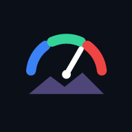

ドライブ中に、速度・高度・ドライブ全体の流れを眺めて楽しむための速度計アプリです。スマホのブラウザ（Chrome）で動き、ホーム画面に追加してアプリのように使えます。
▶ アプリを開く https://shiito2002.github.io/drive-meter/
縦向き・横向きのどちらでも使えます（端末の向きに合わせて自動で切り替わります）。下は縦向きの例です。
| 番号 | 表示 | 説明 |
|---|---|---|
| 1 | GPSの状態 | GPSの精度（±何m）。緑＝良い（15m以内）、黄＝やや悪い、赤＝悪い・受信なし。 |
| 2 | ボタン | ▣ 小窓（7章）／📁 記録の一覧（5章）／▶・⏸ 記録の開始・一時停止（4章）／⚙ 設定（8章） |
| 3 | 現在の速度 | 小数点以下1桁まで表示。 左半分をタップ → 設定速度 −10、右半分をタップ → +10（10〜200km/h）。その下に設定速度と、設定速度との差。 |
| 4 | 速度バー | 設定速度の前後 ±20km/h を拡大表示。中央の白い線が設定速度、薄い帯が許容幅。遅いと左へ、速いと右へ伸びます。範囲の外なら端に ◀ ▶。 |
| 5 | 直近グラフ | 直近の速度（色付きの線）と高度（明るいグレーの面）。表示する時間は2本指でピンチするか設定で変更（0.5〜120分）。 |
| 6 | 市町村 | 今いる市町村。市町村が変わると画面中央に「○○町 に入りました」と出て、音が鳴ります（音は設定で切れます）。 |
| 7 | ドライブ全体 | 記録の最初から今までを縮めて表示。白い枠＝直近グラフの範囲、黄色の点＝最高速度の地点、水色の点線と名前＝市町村の境目。 |
| 8 | 統計 | 最高速度・平均速度（停車中とGPSなしの区間を除く）・走行距離・記録時間・現在の高度・累積上昇（登った高さの合計）。 |
| 表示 | 意味 |
|---|---|
| 赤い数字・枠が点滅 | 設定速度＋許容幅より速い（例：設定60・許容±10なら70km/h超）。 |
| 青い数字・枠が点滅 | 設定速度−許容幅より遅い。停車中（5km/h未満）は出ません。 |
| バー・グラフの色 | 設定速度ちょうどで緑、遅いほど青、速いほど赤へ少しずつ変わります。 |
| 灰色の数字 | GPSの電波が一瞬弱まったため、直前の速度を表示中（6章）。 |
| グラフの灰色の点線 | GPSがなかった区間を補った部分（トンネルなど）。推定なので最高・平均速度には含めません。 |
| 「--」 | GPSを5秒以上受信していない。 |
警告時に音を鳴らすこともできます（設定 →「警告時に音を鳴らす」）。速いときは高い音、遅いときは低い音です。
前回の記録が残っていると、起動時に次の3つから選べます。
| ボタン | 動作 |
|---|---|
| リセットして新しく始める | 前回の記録を消して、新しいドライブにします（保存していない記録は消えます）。 |
| 保存してからリセット | 前回の記録を「月/日 時:分 のドライブ」という名前で保存してから、新しいドライブにします（未保存の記録があるときだけ表示）。 |
| 続きから記録する | 前回の記録に続けて記録します。 |
| ボタン | 動作 |
|---|---|
| 開く | 記録を見返します（下記）。 |
| 名前変更 | 記録の名前を変えます。 |
| GPX | GPX形式で書き出します。地理院地図（ファイルをドラッグ）、Googleマイマップ、Garmin Connect、Strava などで開けます。GPSがなかった区間は含めません。 |
| バックアップ | このアプリ用のファイル（JSON）で書き出します。機種変更やバックアップに。 |
| 削除 | 記録を削除します（元に戻せません）。 |
| ファイルから読み込む | バックアップしたファイルを読み込みます。 |
| すべて書き出し | 保存済みの記録をまとめて1つのバックアップにします。 |
一覧には、距離・時間・最高速度・小さなグラフのほか、通った市町村（例：北見市 → 訓子府町）と、GPSなしの区間の内訳（例：うちGPSなし 6区間・3.8km）が出ます。
| 場面 | アプリの動き |
|---|---|
| トンネルなど （10秒以上途切れる） | 途切れている間は「--」と「GPS 受信なし」。GPSが戻ったときに、入口〜出口の直線距離を走行距離に足し、その区間を平均速度の灰色の点線で補います（10分以内・走行中だった場合のみ）。最高・平均速度には含めません。 |
| 高架下などで一瞬弱まる （数秒） | スマホは電波が弱まると速度をなめらかに下げて補うため、実際より遅く出ます。アプリは1秒で14km/h以上落ちたら直前の速度を灰色で保ち、電波が戻ったら元に戻します。記録も、落ち込んだ部分を前後をつなぐ線に直します。本当に急ブレーキをかけた場合は、最長3秒で実際の速度に切り替わります。 |
| 屋内・机の上 | スマホがまったく揺れていない状態が3秒続き、GPSの精度も悪い（20m超）ときは、速度のぶれとみなして 0km/h にします。 |
▣ を押すと、速度・設定速度との差・速度バー・GPSの状態・市町村を描いた小窓が出ます。もう一度押すと閉じます。
| 項目 | 内容 | 初期値 |
|---|---|---|
| 設定速度 | 目安にする速度。速度表示の左右タップでも ±10 できます。 | 60km/h |
| 許容幅 | この差を超えると赤（超過）・青（低下）で表示。 | ±10km/h |
| 速度バーの表示範囲 | 設定速度の前後どこまでをバーに出すか。 | ±20km/h |
| 直近グラフの表示時間 | 0.5〜120分。グラフのピンチでも変更可。 | 5分 |
| 表示の更新間隔 | 短いほど滑らか、長いほどちらつきにくい（0.2〜5秒）。 | 1秒 |
| 画面の向き | 自動／縦で固定／横で固定（固定はインストールして全画面のときに有効）。 | 自動 |
| 警告時に音を鳴らす | 赤・青になったときに音を鳴らす。 | オフ |
| 市町村が変わったときに音を鳴らす | 境界通知の音。 | オン |
| 高度の補正値 | GPSの高度は海抜より30〜40m高く出ることが多いため、その分を引きます。知っている場所の標高と比べて調整してください。 | −35m |
| デモ走行 | ダミーのドライブ（10倍速）で動きを確認できます。今の記録はリセットされます。 | — |
| 記録をリセット | 今の記録を消して新しいドライブにします。 | — |
設定画面のいちばん下に、バージョン・作成者・データの出典が表示されます。
アプリを2回開き直してください（1回目で裏で新しい版を取得し、2回目から新しい版になります）。今の版は設定画面の下で確認できます。
画面の上に何かを重ねて表示するアプリ（spacedesk、吹き出し表示のアプリなど）が動いていると、Android は許可の画面を押せないようにしています。そのアプリを止めてから許可してください。
GPSを受信できていません。屋外や窓際で少し待つか、Chromeのサイト設定で位置情報が「許可」になっているか確認してください。
GPSの電波が一瞬弱まったときの動きです（6章）。故障ではありません。
トンネルなど、GPSが10秒以上届かなかった区間か、アプリが画面の裏に回っていた区間です。走行中のトンネルは自動で補われます。